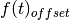
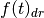
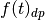
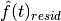
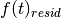
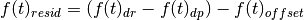
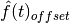
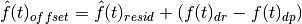
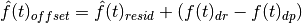
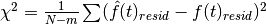

rss_ringoccs.calibration.freq_offset_fit module¶
- Purpose:
- Compute a fit to the frequency offset residual using the frequency offset, predicted sky frequency, and reconstructed sky frequency.
-
class
rss_ringoccs.calibration.freq_offset_fit.FreqOffsetFit(rsr_inst, geo_inst, poly_order=7, f_uso_x=8427222034.3405, verbose=False)¶ Bases:
objectObtains  from
calc_freq_offset,  fromcalc_f_sky_recon, and  fromget_f_sky_pred. Computes a polynomial fit  of order specified bypoly_orderto sigma-clipped residual difference  between observed and predicted frequency offset where the residual is given by
Final frequency offset  is found using the polynomial fit to the frequency offset residuals such that

- Arguments:
rsr_inst (object): object instance of the RSRReader class geo_inst (object): object instance of the Geometry class - Keyword Arguments:
poly_order (float): whole number specifying the order of the polynomial fit to the residual frequency offset f_uso_x (float): frequency in Hz of the X-band ultra-stable oscilator onboard the Cassini spacecraft. Default is 8427222034.3405 Hz. verbose (bool): when True, enables verbose output mode - Attributes:
f_offset_fit: final frequency offset evaluated using fit to offset residuals  f_spm: SPM at which the offset frequency was sampled f_sky_pred: predicted sky frequency f_sky_resid_fit: fit to the residual frequency offset math:hat{f}(t)_{resid} evaluated at f_spmchi_squared: sum of the squared residual frequency offset fit such that  for  data and
data and  free
parameters (i.e., the polynomial order plus
one).
free
parameters (i.e., the polynomial order plus
one).
-
create_mask(f_spm, f_rho, f_sky_resid)¶ - Purpose:
Creates a Boolean mask array which excludes data based on the following critera:
#. ring or planetary occultation in region prevents accurate estimation of the offset frequency #. offset frequencies fall more than 5-sigma beyond the median offset frequency #. adjacent data all excluded by previous requirements (excludes noise which by happenstance satisfies the above criteria)- Arguments:
f_spm (np.ndarray): SPM sampled by calc_freq_offsetwhen calculating the offset frequencies for the occultationf_rho (np.ndarray): ring intercept radius of the spacecraft signal resampled to match f_spm f_sky_resid (np.ndarray): residual sky frequency
-
fit_f_sky_resid(f_spm, f_rho, f_sky_resid, poly_order=None, verbose=False)¶ Fit a polynomial to residual frequency.
- Arguments:
f_spm (np.ndarray): SPM sampled by calc_freq_offsetwhen calculating the offset frequencies for the occultationf_rho (np.ndarray): ring intercept radius of the spacecraft signal resampled to match f_spm f_sky_resid (np.ndarray): residual sky frequency - Keyword Arguments:
poly_order (float): Order of polynomial fit to residual frequency verbose (bool): If True, print processing steps
-
plotFORFit(spm, resid, fit, mask, spm_min, spm_max, occ_min, occ_max, poly_order)¶ - Purpose:
- Plot results of the automated frequency offset residual fit and save plot to a file. File name will match the .LBL and .TAB nomenclature.
- Arguments:
spm (np.ndarray): SPM sampled by calc_freq_offsetwhen calculating the offset frequencies for the occultationresid (np.ndarray): residual sky frequency fit (np.ndarray): polynomial fit to the residual sky frequency mask (np.ndarray): boolean array used to mask residual sky frequency for the polynomial fitting spm_min (float): start of occultation in SPM spm_max (float): end of occultation in SPM poly_order (float): order of polynomial fit to the residual sky frequency